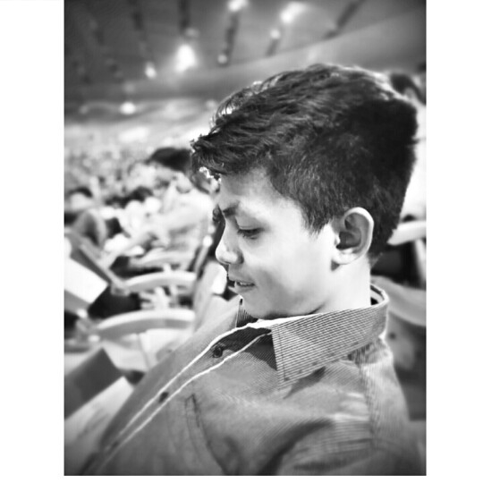

Basic Information:
I am Mark Brian D. Mortel, I am from San Jose Delmonte Bulacan, I am 23 years old, My hobbies includes: Playing Basketball,Playing Computer and Mobile games, I also play guitar and I also love Watching Movies and Going out with my friends. I live with my sister and my mother since my other siblings already had their own families, I am College Undergrad and I studied Bachelor of Science in Civil Engineering in Mapua University and I became interested in Coding and programming especially in Web Developing once I discovered about the Kodego, and that makes me want to change my plans and path and explore into Technology industry since it is the most in demand and most progressive industry in the whole world and I want to see my self to be a part of it. I grew up here in Bulacan and my provinces are in Sta.Elena Bicol, where my mother came from and Romblon where my father grew up with. I am kind of an introvert but sometimes out going person as well so I think it is a well balanced personality.

What is my Background/History?
I grew up in Sanjose Del Monte Bulacan where my family is residing and I have four siblings which is older than me. I spent most of my younger years playing outside with my playmates and my cousins so I learned many different Pinoy street games, but I also learned how to play videogames and computer games in my early stages of life since my cousin owned a playstation and computer shop back then.. that is when my interest in playing video games has started. I grew up like an ordinary child playing outside most of the time and play video games once I get home. I grew up in a very disciplined and well mannered family and even though I lost my dad at an early age of 11 I still grew up like an ordinary but well manered man raised by my mom and my older siblings. I studied my elementary school years in Forest Ridge Integrated School and My Junior High school in Jarmmeth Academy and my Senior High school in First City Providencial College, and recently studied my college in Mapua University.

What is My Daily Routine?
I mostly spend my weekdays studying or learning something.. while I spend most of my weekends playing Basketball, Video games and hanging out my friends and still performing my obligations in our church every sunday. Most of my days I wake up every morning eat my breakfast and attend my class in Kodego Bootcamp to learned and become a Full Stack Web Developer, in the middle of the day I still managed to do my household choirs especially when my mom are not around the house and my sister are away doing her job. I also watch movies and play insturment during my freetime within the day and on some days I still take time to go on a date with my girlfriend when our schedule are both compatible on that specific day. I basically do not have a specific schedule that I have to do everyday but I had the routine that just kind of flow that my body and mind will automatically reciprocate.